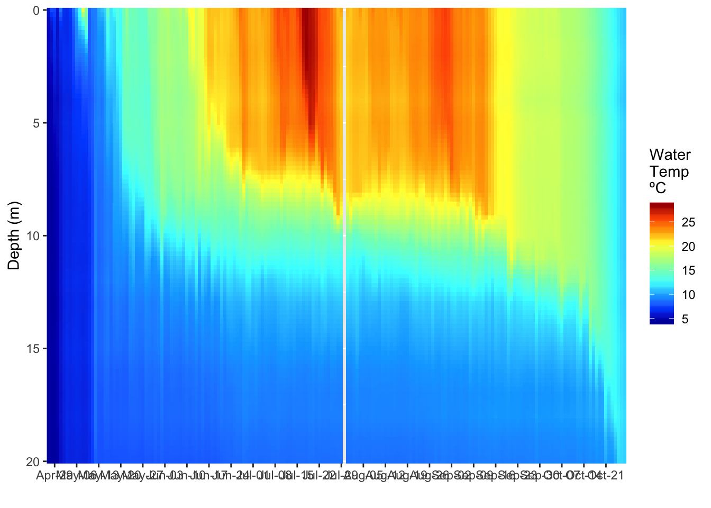
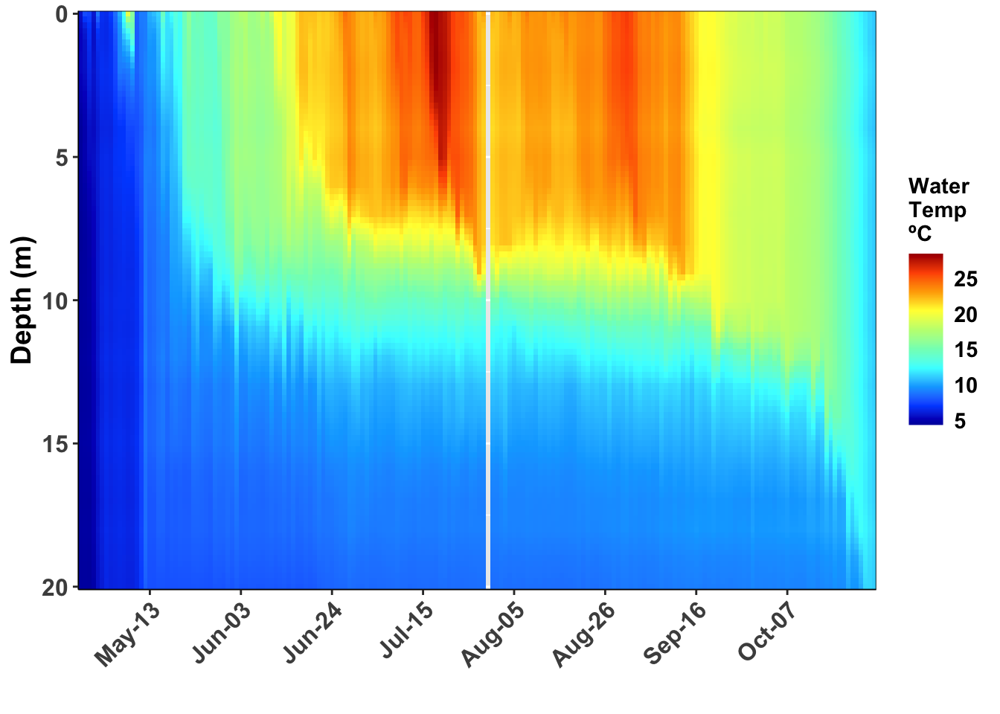
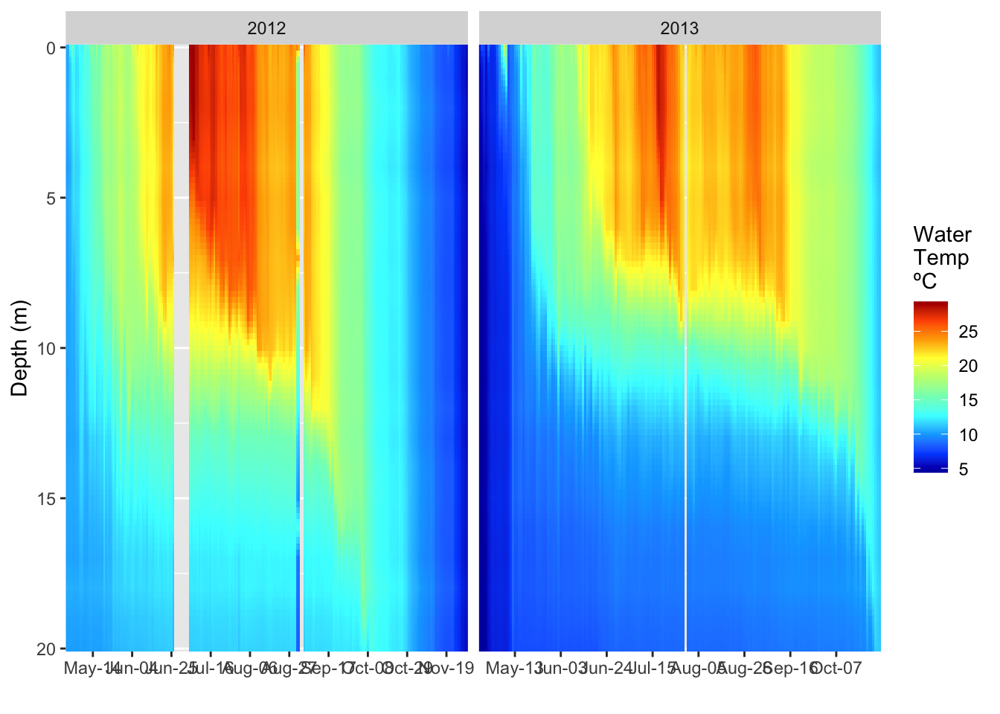
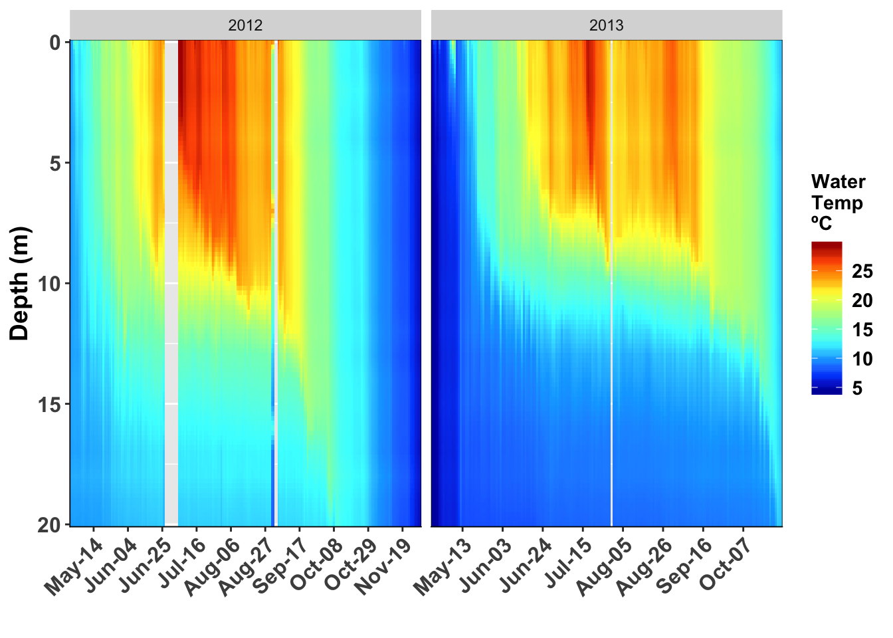

##This is how to do lake heatmaps in R using GGPLOT
#Install packages
# This code is an adaptation of the R work group at GLEON 19
# install libraries
# install.packages("tidyverse")
# install.packages("scales")
# install.packages("ggplot2")
# install.packages("akima")
# install.packages("lubridate")
# install.packages("colorRamps")# load the libraries each time you restart R
#load packages
library(tidyverse)
library(lubridate)
library(ggplot2)
library(scales)
library(colorRamps)
library(akima)#Load Data
#use readr package to load mendoata data
mendota.df <- read_csv("./data/mendota_temp.csv")#Clean Data
#clean up bad data and out of range data
mendota_clean.df <- mendota.df %>% # use this df for rest of commands
filter(wtemp>=0) %>% # select data that is greater or equal to 0
filter(!is.na(wtemp)) %>% # remove all NA values
select(sampledate, depth, wtemp) # this uses only the variables that are needed#Interpolate Data
# interolated watertemp with depth
# mendota_interp.df <- mendota_clean.df %>% rename(x=sampledate, y=depth, z=wtemp)
# jsut a note here that the x interpretation step of 1 works with day data as it is using the
# number of days. The issue comes up when you want to use time. The thing to remember here is
# time in R is the number of seconds since 1970-01-01 00:00:00 so if you do hours you would use
# 3600 seconds rather than 1
mendota_interp.df <- interp(x = mendota_clean.df$sampledate,
y = mendota_clean.df$depth,
z = mendota_clean.df$wtemp,
xo = seq(min(mendota_clean.df$sampledate), max(mendota_clean.df$sampledate), by = 1),
yo = seq(min(mendota_clean.df$depth), max(mendota_clean.df$depth), by = 0.2),
extrap=FALSE,
linear=TRUE)#Convert interpolated data to dataframe
# this converts the interpolated data into a dataframe
mendota_interp.df <- interp2xyz(mendota_interp.df, data.frame = TRUE)#Clean up the interpolated dataframe
# clean up dates using dplyr
mendota_interp.df <- mendota_interp.df %>%
filter(x %in% as.numeric(mendota.df$sampledate)) %>% # this matches the interpolated data with what is in the main dataframe to remove dates we dont have
mutate(date = as_date(x)) %>% # interp turned dates into integers and this converts back
mutate(day = day(date)) %>% # create day varaible for plotting
mutate(year = year(date)) %>% # create a four digit year column
select(-x) %>% #remove x column
rename(depth=y, wtemp=z) #rename variables#Filter out one year
# lets look at one date 2013
mendota_2013.df <- mendota_interp.df %>%
filter(year==2013)#Plot one year of data
# plot our interpolated data
ggplot(mendota_2013.df, aes(x = date, y = depth, z = wtemp, fill = wtemp)) +
geom_raster() +
scale_y_reverse(expand=c(0,0)) +
scale_fill_gradientn(colours=matlab.like(10), na.value = 'gray', name="Water\nTemp \nºC") +
scale_x_date(date_breaks = "1 week",
# limits = as_date(c('2016-12-06','2017-02-25')),
labels=date_format("%b-%d"), expand=c(0,0)) +
ylab("Depth (m)") +
xlab("") 
#Different way to plot single year
# a different way to do the plot
# the cool thing about tidyverse is it works together so you can make graphs without
# creating a lot of dataframes
mendota_interp.df %>%
filter(year==2013) %>%
ggplot(aes(x = date, y = depth, z = wtemp, fill = wtemp)) +
geom_raster() +
scale_y_reverse(expand=c(0,0)) +
scale_fill_gradientn(colours=matlab.like(10), na.value = 'gray', name="Water\nTemp \nºC") +
scale_x_date(date_breaks = "1 week",
# limits = as_date(c('2016-12-06','2017-02-25')),
labels=date_format("%b-%d"), expand=c(0,0)) +
ylab("Depth (m)") +
xlab("") #Publication ready plot
# Clean up plots and make it look nice ----
temp_heatmap.plot <- ggplot(mendota_2013.df, aes(x = date, y = depth, z = wtemp, fill = wtemp)) +
geom_raster() +
scale_y_reverse(expand=c(0,0)) +
scale_fill_gradientn(colours=matlab.like(10), na.value = 'gray', name="Water\nTemp \nºC") +
scale_x_date(date_breaks = "3 week",
# limits = as_date(c('2016-12-06','2017-02-25')),
labels=date_format("%b-%d"), expand=c(0,0)) +
ylab("Depth (m)") +
xlab("") +
guides(fill = guide_colorbar(ticks = FALSE)) +
theme(
# LABLES APPEARANCE
axis.title.x=element_text(size=14, face="bold"),
axis.title.y=element_text(size=14, face="bold"),
axis.text.x = element_text(size=12, face="bold", angle=45, hjust=1),
axis.text.y = element_text(size=12, face="bold"),
# plot.title = element_text(hjust = 0.5, colour="black", size=22, face="bold"),
# LEGEND
# LEGEND TEXT
legend.text = element_text(colour="black", size = 11, face = "bold"),
# LEGEND TITLE
legend.title = element_text(colour="black", size=11, face="bold"),
# LEGEND POSITION AND JUSTIFICATION
# legend.justification=c(0.1,1),
legend.position= "right", #c(0.02,.99)
# PLOT COLORS
# REMOVE BOX BEHIND LEGEND SYMBOLS
# REMOVE LEGEND BOX
# legend.key = element_rect(fill = "transparent", colour = "transparent"),
# REMOVE LEGEND BOX
# legend.background = element_rect(fill = "transparent", colour = "transparent"),
# #REMOVE PLOT FILL AND GRIDS
# panel.background=element_rect(fill = "transparent", colour = "transparent"),
# # removes the window background
# plot.background=element_rect(fill="transparent",colour=NA),
# # removes the grid lines
# panel.grid.major = element_blank(),
# panel.grid.minor = element_blank(),
# ADD AXES LINES AND SIZE
axis.line.x = element_line(color="black", size = 0.3),
axis.line.y = element_line(color="black", size = 0.3),
# ADD PLOT BOX
panel.border = element_rect(colour = "black", fill=NA, size=0.3))
temp_heatmap.plot
#Save plot as pdf
# saves graph to file that is of a set size
ggsave(temp_heatmap.plot, file=".//output//2017 11 21 temp heat maps.pdf",width=6, height=6 )#Facetting grpahs by years
#lets look at graphs that are facetted
mendota_2012_2013.df <- mendota_interp.df %>%
filter(year %in% 2012:2013)
ggplot(mendota_2012_2013.df, aes(x = date, y = depth, z = wtemp, fill = wtemp)) +
geom_raster() +
scale_y_reverse(expand=c(0,0)) +
scale_fill_gradientn(colours=matlab.like(10), na.value = 'gray', name="Water\nTemp \nºC") +
scale_x_date(date_breaks = "3 week",
# limits = as_date(c('2016-12-06','2017-02-25')),
labels=date_format("%b-%d"), expand=c(0,0)) +
ylab("Depth (m)") +
xlab("") +
facet_wrap("year", scale="free_x") 
# the trick to get multiple years here is to have the free_x other wise the graphs all have
# the full range of dates on the x axis#Facetted pretty graphs
ggplot(mendota_2012_2013.df, aes(x = date, y = depth, z = wtemp, fill = wtemp)) +
geom_raster() +
scale_y_reverse(expand=c(0,0)) +
scale_fill_gradientn(colours=matlab.like(10), na.value = 'gray', name="Water\nTemp \nºC") +
scale_x_date(date_breaks = "3 week",
# limits = as_date(c('2016-12-06','2017-02-25')),
labels=date_format("%b-%d"), expand=c(0,0)) +
ylab("Depth (m)") +
xlab("") +
facet_wrap("year", scale="free_x") +
theme(
# LABLES APPEARANCE
axis.title.x=element_text(size=14, face="bold"),
axis.title.y=element_text(size=14, face="bold"),
axis.text.x = element_text(size=12, face="bold", angle=45, hjust=1),
axis.text.y = element_text(size=12, face="bold"),
# plot.title = element_text(hjust = 0.5, colour="black", size=22, face="bold"),
# LEGEND
# LEGEND TEXT
legend.text = element_text(colour="black", size = 11, face = "bold"),
# LEGEND TITLE
legend.title = element_text(colour="black", size=11, face="bold"),
# LEGEND POSITION AND JUSTIFICATION
# legend.justification=c(0.1,1),
legend.position= "right", #c(0.02,.99)
# PLOT COLORS
# REMOVE BOX BEHIND LEGEND SYMBOLS
# REMOVE LEGEND BOX
# legend.key = element_rect(fill = "transparent", colour = "transparent"),
# REMOVE LEGEND BOX
# legend.background = element_rect(fill = "transparent", colour = "transparent"),
# #REMOVE PLOT FILL AND GRIDS
# panel.background=element_rect(fill = "transparent", colour = "transparent"),
# # removes the window background
# plot.background=element_rect(fill="transparent",colour=NA),
# # removes the grid lines
# panel.grid.major = element_blank(),
# panel.grid.minor = element_blank(),
# ADD AXES LINES AND SIZE
axis.line.x = element_line(color="black", size = 0.3),
axis.line.y = element_line(color="black", size = 0.3),
# ADD PLOT BOX
panel.border = element_rect(colour = "black", fill=NA, size=0.3))